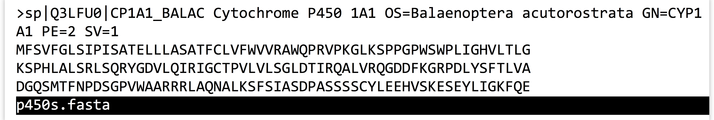
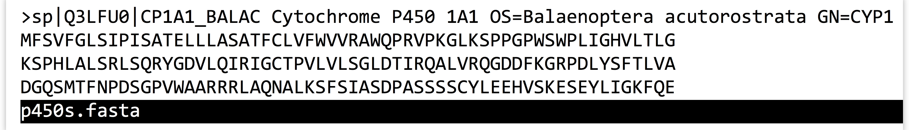
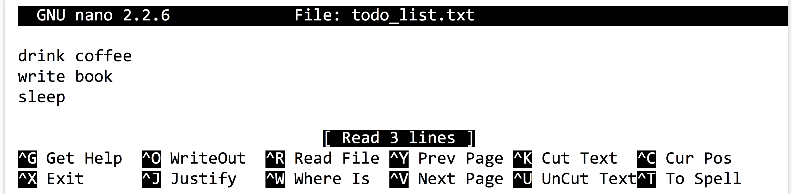
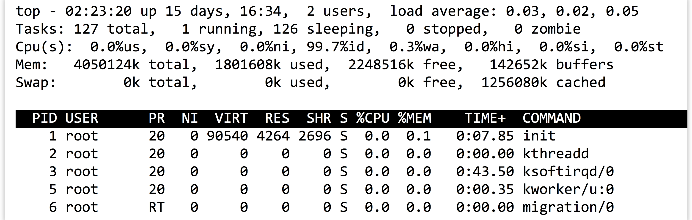

Chapter 4 Working with Files and Directories
Now that we know how to locate files and directories in the filesystem, let’s learn a handful of important tools for working with them and the system in general.
Viewing the Contents of a (Text) File
Although there are many tools to view and edit text files, one of the most efficient for viewing them is called less, which takes as a parameter a path to the file to view, which of course may just be a file name in the present working directory (which is a type of relative path).9
[oneils@mbp ~]$ ls
apcb Documents Music Pictures Templates Videos
Desktop Downloads p450s.fasta Public todo_list.txt
The invocation of less on the file p450s.fasta opens an “interactive window” within the terminal window, wherein we can scroll up and down (and left and right) in the file with the arrow keys. (As usual, the mouse is not very useful on the command line.) We can also search for a pattern by typing / and then typing the pattern before pressing Enter.

When finished with less, pressing q will exit and return control to the shell or command line. Many of the text formats used in computational biology include long lines; by default, less will wrap these lines around the terminal so they can be viewed in their entirety. Using less -S will turn off this line wrapping, allowing us to view the file without any reformatting. Here’s what the file above looks like when viewed with less -S p450s.fasta:

Notice that the first long line has not been wrapped, though we can still use the arrow keys to scroll left or right to see the remainder of this line.
Creating New Directories
The mkdir command creates a new directory (unless a file or directory of the same name already exists), and takes as a parameter the path to the directory to create. This is usually a simple file name as a relative path inside the present working directory.
[oneils@mbp ~]$ ls
apcb Documents Music Pictures Templates Videos
Desktop Downloads p450s.fasta Public todo_list.txt
[oneils@mbp ~]$ mkdir projects
[oneils@mbp ~]$ ls
apcb Documents Music Pictures Public todo_list.txt
Desktop Downloads p450s.fasta projects Templates Videos
Move or Rename a File or Directory
The mv utility serves to both move and rename files and directories. The simplest usage works like mv <source_path> <destination_path>, where <source_path> is the path (absolute or relative) of the file/directory to rename, and <destination_path> is the new name or location to give it.
In this example, we’ll rename p450s.fasta to p450s.fa, move it into the projects folder, and then rename the projects folder to projects_dir.
[oneils@mbp ~]$ mv p450s.fasta p450s.fa
[oneils@mbp ~]$ mv p450s.fa projects
[oneils@mbp ~]$ mv projects projects_dir
[oneils@mbp ~]$ ls
apcb Documents Music projects_dir Templates Videos
Desktop Downloads Pictures Public todo_list.txt
Because mv serves a dual role, the semantics are important to remember:
- If
<destination_path>doesn’t exist, it is created (so long as all of the containing folders exist). - If
<destination_path>does exist:- If
<destination_path>is a directory, the source is moved inside of that location. - If
<destination_path>is a file, that file is overwritten with the source.
- If
Said another way, mv attempts to guess what it should do, on the basis of whether the destination already exists. Let’s quickly undo the moves above:
[oneils@mbp ~]$ mv projects_dir/p450s.fa p450s.fasta
[oneils@mbp ~]$ mv projects_dir/ projects
A few other notes: First, when specifying a path that is a directory, the trailing / is optional: mv projects_dir/ projects is the same as mv projects_dir projects if projects_dir is a directory (similarly, projects could have been specified as projects/). Second, it is possible to move multiple files into the same directory, for example, with mv p450s.fasta todo_list.txt projects. Third, it is quite common to see . referring to the present working directory as the destination, as in mv ../file.txt . for example, which would move file.txt from the directory above the present working directory (..) into the present working directory (., or “here”).
Copy a File or Directory
Copying files and directories is similar to moving them, except that the original is not removed as part of the operation. The command for copying is cp, and the syntax is cp <source_path> <destination_path>. There is one caveat, however: cp will not copy an entire directory and all of its contents unless you add the -r flag to the command to indicate the operation should be recursive.
[oneils@mbp ~]$ cp todo_list.txt todo_copy.txt
[oneils@mbp ~]$ cp -r projects projects_dir_copy
Forgetting the -r when attempting to copy a directory results in an omitting directory warning.
It is possible to simultaneously copy and move (and remove, etc.) many files by specifying multiple sources. For example, instead of cp ../todo_list.txt ., we could have copied both the to-do list and the p450s.fasta file with the same command:
[oneils@mbp ~/projects]$ cp ../todo_list.txt ../p450s.fasta .
Remove (Delete) a File or Directory
Files may be deleted with the rm command, as in rm <target_file>. If you wish to remove an entire directory and everything inside, you need to specify the -r flag for recursive, as in rm -r <target_dir>. Depending on the configuration of your system, you may be asked “are you sure?” for each file, to which you can reply with a y. To avoid this checking, you can also specify the -f (force) flag, as in rm -r -f <target_dir> or rm -rf <target_dir>. Let’s create a temporary directory alongside the file copies from above, inside the projects folder, and then remove the p450s.fasta file and the todo_list.txt file as well as the temporary folder.
[oneils@mbp ~/projects]$ mkdir tempdir
[oneils@mbp ~/projects]$ ls
p450s.fasta tempdir todo_list.txt
[oneils@mbp ~/projects]$ rm todo_list.txt
[oneils@mbp ~/projects]$ rm -rf tempdir
[oneils@mbp ~/projects]$ ls
p450s.fasta
Beware! Deleted files are gone forever. There is no undo, and there is no recycle bin. Whenever you use the rm command, double-check your syntax. There’s a world of difference between rm -rf project_copy (which deletes the folder project_copy) and rm -rf project _copy (which removes the folders project and _copy, if they exist). If you’re nervous about using rm, consider utilizing the -i option, which will ask for confirmation before removing each file.
Checking the Size of a File or Directory
Although ls -lh can show the sizes of files, this command will not summarize how much disk space a directory and all of its contents take up. To find out this information, there is the du (disk usage) command, which is almost always combined with the -s (summarize) and -h (show sizes in human-readable format) options.
[oneils@mbp ~/projects]$ cd $HOME
[oneils@mbp ~/]$ ls
apcb Documents Music Pictures Public todo_list.txt
Desktop Downloads p450s.fasta projects Templates Videos
[oneils@mbp ~/]$ du -sh p450s.fastq
16K p450s.fasta
[oneils@mbp ~/]$ du -sh projects
4.0K projects/
[oneils@mbp ~/]$ du -sh .
11M .
As always, . is a handy target, here helping to determine the file space used by the present working directory.
Editing a (Text) File
There is no shortage of command-line text editors, and while some of them—like vi and emacs—are powerful and can enhance productivity in the long run, they also take a reasonable amount of time to become familiar with. (Entire books have been written about each of these editors.)
In the meantime, a simple text editor available on most systems is nano; to run it, we simply specify a file name to edit:
[oneils@mbp ~/]$ nano todo_list.txt
If the file doesn’t exist already, it will be created when it is first saved, or “written out.” The nano editor opens up an interactive window much like less, but the file contents can be changed. When done, the key sequence Control-o will save the current edits to the file specified (you’ll have to press Enter to confirm), and then Control-x will exit and return control to the command prompt. This information is even presented in a small help menu at the bottom.

Although nano is not as sophisticated as vi or emacs, it does support a number of features, including editing multiple files, cut/copy/paste, find and replace by pattern, and syntax highlighting of code files.
Code files are the types of files that we will usually want to edit with nano, rather than essays or short stories. By default, on most systems, nano automatically “wraps” long lines (i.e., automatically presses Enter) if they would be longer than the screen width. Unfortunately, this feature would cause an error for most lines of code! To disable it, nano can be started with the -w flag, as in nano -w todo_list.txt.
Command-Line Efficiency
While the shell provides a powerful interface for computing, it is certainly true that the heavy reliance on typing can be tedious and prone to errors. Fortunately, most shells provide a number of features that dramatically reduce the amount of typing needed.
First, wildcard characters like * (which matches any number of arbitrary characters) and ? (which matches any single arbitrary character) allow us to refer to a group of files. Suppose we want to move three files ending in .temp into a temp directory. We could run mv listing the files individually:
[oneils@mbp ~/apcb/intro]$ ls
fileAA.temp fileA.temp fileB.temp temp
[oneils@mbp ~/apcb/intro]$ mv fileAA.temp fileA.temp fileB.temp temp/
Alternatively, we could use mv file*.temp temp; the shell will expand file*.temp into the list of files specified above before passing the expanded list to mv.10
[oneils@mbp ~/apcb/intro]$ ls
fileAA.temp fileA.temp fileB.temp temp
[oneils@mbp ~/apcb/intro]$ mv file*.temp temp/
Similarly, we could move only fileA.temp and fileB.temp (but not fileAA.temp) using mv file?.tmp temp, because the ? wildcard will only match one of any character. These wildcards may be used anywhere in an absolute or relative path, and more than one may be used in a single path. For example, ls /home/*/*.txt will inspect all files ending in .txt in all users’ home directories (if they are accessible for reading).
Second, if you want to rerun a command, or run a command similar to a previously run command, you can access the command history by pressing the up arrow. Once you’ve identified which command you want to run or modify, you can modify it using the left and right arrows, backspace or delete, and then typing and pressing Enter again when you are ready to execute the modified command. (You don’t even need to have the cursor at the end of the line to press Enter and execute the command.) For a given login session, you can see part of your command history by running the history command.
Finally, one of the best ways to navigate the shell and the filesystem is by using tab completion. When typing a path (either absolute or relative), file or directory name, or even a program name, you can press Tab, and the shell will autocomplete the portion of the path or command, up until the autocompletion becomes ambiguous. When the options are ambiguous, the shell will present you with the various matching options so that you can inspect them and keep typing. (If you want to see all options even if you haven’t started typing the next part of a path, you can quickly hit Tab twice.) You can hit Tab as many times as you like while entering a command. Expert command-line users use the Tab key many times a minute!
Getting Help on a Command or Program
Although we’ve discussed a few of the options(also known as arguments, or flags) for programs like ls, cp, nano, and others, there are many more you might wish to learn about. Most of these basic commands come with “man pages,” short for “manual pages,” that can be accessed with the man command.
[oneils@mbp ~]$ man ls
This command opens up a help page for the command in question (usually in less or a program similar to it), showing the various parameters and flags and what they do, as well as a variety of other information such as related commands and examples. For some commands, there are also “info” pages; try running info ls to read a more complete overview of ls. Either way, as in less, pressing q will exit the help page and return you to the command prompt.
Viewing the Top Running Programs
The top utility is invaluable for checking what programs are consuming resources on a machine; it shows in an interactive window the various processes (running programs) sorted by the percentage of CPU time they are consuming, as well as which user is running them and how much RAM they are consuming. Running top produces a window like this:

From a users’ perspective, the list of processes below the dark line is most useful. In this example, no processes are currently using a significant amount of CPU or memory (and those processes that are running are owned by the administrator root). But if any user were running processes that required more than a tiny bit of CPU, they would likely be shown. To instead sort by RAM usage, use the key sequence Control-M. When finished, q will quit top and return you to the command prompt.
Of particular importance are the %CPU and %MEM columns. The first may vary from 0 up to 100 (percent) times the number of CPU cores on the system; thus a value of 3200 would indicate a program using 100% of 32 CPU cores (or perhaps 50% of 64 cores). The %MEM column ranges from 0 to 100 (percent). It is generally a bad thing for the system when the total memory used by all process is near or over 100%—this indicates that the system doesn’t have enough “working memory” and it may be attempting to use the much slower hard drive as working memory. This situation is known as swapping, and the computer may run so slowly as to have effectively crashed.
Killing Rogue Programs
It sometimes happens that programs that should run quickly, don’t. Perhaps they are in an internal error state, looping forever, or perhaps the data analysis task you had estimated to take a minute or two is taking much longer. Until the program ends, the command prompt will be inaccessible.
There are two ways to stop such running programs: the “soft” way and the “hard” way. The soft way consists of attempting to run the key combination Control-c, which sends a stop signal to the running process so that it should end.
But if the rogue program is in a particularly bad error state, it won’t stop even with a Control-c, and a “hard” kill is necessary. To do this requires logging in to the same machine with another terminal window to regain some command-line access. Run top, and note the PID (process ID) of the offending process. If you don’t see it in the top window, you can also try running ps augx, which prints a table of all running processes. Suppose the PID for the process to kill is 24516; killing this process can be done by running kill -9 24156. The -9 option specifies that the operating system should stop the process in its tracks and immediately clean up any resources used by it. Processes that don’t stop via a kill -9 are rare (though you can’t kill a process being run by another user), and likely require either a machine reboot or administrator intervention.
Exercises
Create the following directories inside your home directory, if you don’t already have them:
downloads,local, andprojects. Inside oflocal, create a directory calledbin. These folders are a common and useful set to have in your home directory—we’ll be using them in future chapters to work in, download files to, and install software to.Open not one but two login windows, and log in to a remote machine in each. This gives you two present working directories, one in each window. You can use one to work, and another to make notes, edit files, or watch the output of
top. Create a hidden directory inside of your home directory called.hidden. Inside of this directory, create a file callednotes. Edit the file to contain tricks and information you fear you might forget.11Spend a few minutes just practicing tab completion while moving around the filesystem using absolute and relative paths. Getting around efficiently via tab-completion is a surprisingly necessary skill.
Skim the man page for
ls, and try out a few of the options listed there. Read a bit of theinfopage fornano.
There is a similar program called
more, originally designed to show “more” of a file. Thelessprogram was developed as a more full-featured alternative tomore, and was so named because “less is more.”↩︎This is important to consider when combining
rmwith wildcards; the commandsrm -rf *.tempandrm -rf * .tempare very different! The latter will remove all files in the present directory, while the former will only remove those ending in.temp.↩︎You might also consider keeping a paper notebook, or something in a Wiki or other text document. If you prefer to keep digital notes, try to use a simple text editor like
nano, TextEdit on OS X, or Notepad on Windows. Rich-text editors like Microsoft Word will often automatically replace things like simple quote characters with serif quotes, which don’t work on the command line, leading to headaches.↩︎